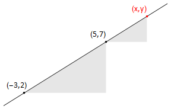

5. Differentiation¶
5.1. Motivations and First Principle Arguments¶
The equation \(y=mx+c\) represents a straight line. In this expression, the constant \(m\) tells us how quickly the slope \(y\) changes with \(x\).
For instance,
if \(m\)=1 then ùë¶ increases by 1 unit for every unit of increase in \(x\)
if \(m\)=2 then ùë¶ increases by 2 units for every unit of increase in \(x\)
if \(m\)=−2 then ùë¶ decreases by 2 units for every unit of increase in \(x\)
Example
Problem: Find the slope of the straight line connecting the points (-3,2) and (5,7).
Solution:

The straight line that can be drawn through the points (-3,2) and (5,7).
the change in \(x\) is given by \(Δx\)=(5+3)=8
the change in \(y\) is given by \(Δy\)=(7−2)=5
So \(y\) increases by 5 units for every 8 units of increase in \(x\)
The rate of change of \(y\) with \(x\) (the slope) is \(\displaystyle\frac{Δy}{Δx}\) = \(\displaystyle\frac{5}{8}\) (This is the constant \(m\) in the equation of the line \(y=mx+c\))
Triangles drawn under the line have the same slope. By considering a triangle connecting the point (5,7) to (\(x\),\(y\)), we could write \(\displaystyle\frac{y−7}{x−5}\) = \(\displaystyle\frac{5}{8}\), which rearranges to \(y\)=\(\displaystyle\frac{5}{8}x\) + \(\displaystyle\frac{31}{8}\).
In a curve, the slope is not constant, but we can identify the slope at any point by drawing the tangent to the curve at that point. The tangent is the line that “just touches” the curve, and the normal is the line that is at right angles to the tangent.
Fig. 5.1 The tangent at the point is indicated in blue and the normal is indicated in red. If the tangent has slope \(m\) then the normal has slope −1/\(m\).¶
In Fig. 5.1 we can see that if we moved the point along the curve, both the slope of the tangent line and the normal line change. We are interested in finding a mathematical expression for the slope of a curve at any given point \(x\).
Fig. 5.2 The curve shows a hypothetical function \(f\), and the black dashed line shows the tangent at the arbitrary point \((x,f(x))\). The slope of this line is the height:base ratio in the gray shaded triangle¶
As a first approximation, we construct a secant on the curve by joining \(x\) to a nearby point \(x+Δx\). Here, \(Δx\) means a small change in the parameter \(x\). This result is shown graphically in Fig. 5.2, we consider the secant line joining \((x,f(x))\) to a nearby point \((x+Δx,f(x+Δx))\)
The slope of the secant line is given by:
As we make \(Δx\) smaller so that the two points are closer together, the secant line approaches the tangent. We are therefore interested in what happens to (5.1) “as \(Δx\) approaches zero”
Example
Consider the function \(f(x)=x^2\). Using the definition given in (5.1), we have
\(\displaystyle\frac{Œîf}{Œîx}=\displaystyle\frac{f(x+Œîx)−f(x)}{Œîx}=\displaystyle\frac{(x+Œîx)^2−x^2}{Œîùë•}=\displaystyle\frac{x^2+2Œîx+(Œîx)^2−x^2}{Œîùë•}=2x+Œîx\)
As \(Œîx\) approaches zero the result approaches \(2x\), which we can write as \(\displaystyle\frac{Œîùëì}{Œîùë•}‚Üí2x\) because \(Œîx‚Üí0\).
More formally, the result is written as
\(\displaystyle \lim_{Δx \to 0} \displaystyle\frac{f(x+Δx)-f(x)}{Δx}=2x\)
and we say that “the limit \(Δx\)→0”, the result is \(2x\).
Fig. 5.3 A plot of the function \(y=x^2\), together with the tangent. The tangent has slope \(2x\).¶
Note that in this example, a factor of \(Δx\) was cancelled from the numerator and denominator. The limit is not evaluated at \(Δx=0\), but as \(Δx\) approaches \(0\). The derivative of a function \(f\) with respect to \(x\) is given by the result
The derivative \(\displaystyle\frac{\mathrm{d}f}{\mathrm{d}x}\) is also written \(f'(x)\). The two different notations are known as Newton and Leibniz notation.
The process of calculating the derivative is called “differentiation”.
As \(Δx\rightarrow 0\), both the numerator and denominator of the fraction tend to zero, yet in most cases we will see that their ratio approaches a finite limit. What determines the limit is how quickly the numerator approaches zero, relative to the denominator.
Questions
Calculate \(\displaystyle\frac{\mathrm{d}}{\mathrm{d}x}(\displaystyle\frac{3x}{2+2ùë•})\) from first principles (i.e. using the definition of the derivative)
Differentiate \(ùë¶=x^4−2x^2\) using first principles, and \emph{hence}
(i) Calculate the equation of the tangent to this curve at \(x=3\)
(ii) Calculate the equation of the normal to the curve at \(x=3\)
5.2. Derivative as a “rate of change”¶
Differentiation can be thought of as a measure of the rate of change of one variable with respect to another. For instance, \(\displaystyle\frac{\mathrm{d}y}{\mathrm{d}x}\) is a measure of how quickly \(y\) changes (instantaneously) as \(x\) changes. Here, we call \(y\) the dependent variable, and we call \(x\) the independent variable.
In many problems the independent variable is time. For example, consider the case of a simple pendulum shown in Fig. 5.4, where \(\theta(t)\) measures the anticlockwise angle of the pendulum from the downward vertical as a function of time \(t\). The pendulum is initially released from rest at a positive angle.
Fig. 5.4 A pendulum swing “animation”, the angle of inclination with the downward vertical is denoted by \(\theta\) and is measured in the anti-clockwise direction. The graph on the right shows the rate of change of \(\theta\) with respect to time \(t\).¶
At the maximum height of the swing (amplitude), the pendulum comes to an instantaneous standstill, and so \(\displaystyle\frac{\mathrm{d}\theta}{\mathrm{d}t}=0\).
As the pendulum swings clockwise, \(\theta\) is decreasing and so \(\displaystyle\frac{\mathrm{d}\theta}{\mathrm{d}t}<0\).
As the pendulum swings anticlockwise, \(\theta\) is increasing and so \(\displaystyle\frac{\mathrm{d}\theta}{\mathrm{d}t}>0\).
On the downswing the pendulum picks up speed. The angular speed (rate of change of \(|\theta|\)) is greatest at the mid-point of each swing.
5.3. Second and Higher Derivatives¶
We can differentiate a function repeatedly. For example, we might differentiate the function \(3x^2+5x^3\) w.r.t. \(x\) twice:
We call this result the “second derivative” w.r.t. \(x\). and we write \(\displaystyle\frac{\mathrm{d}^2}{\mathrm{d}x^2}(3x^2+5x^3)=6+30x\). In general, the \(n^{th}\) derivative is denoted by \(\displaystyle\frac{\mathrm{d}^n}{\mathrm{d}x^n}\). We have already seen that the notation \(f'(x)\) can be used to denote the first derivative \(\displaystyle\frac{\mathrm{d}f}{\mathrm{d}x}\), and this notation can be extended to higher derivatives:
The dash notation becomes a bit cumbersome for higher derivatives, so we write \(f^{(n)}(x)=\displaystyle\frac{\mathrm{d}^nf}{\mathrm{d}x^n}\).
For example, \(f^{(4)}(x)=f''''(x)=\displaystyle\frac{\mathrm{d}^4f}{\mathrm{d}x^4}\)
There are still more ways to write the derivative of a function, and we will introduce some of them in the chapter of the notes about partial derivatives.
Note on differentiation with respect to time : “Dotty” notation is used for differentiation with respect to time : \( \dot{x}=\displaystyle\frac{\mathrm{d}x}{\mathrm{d}t}\) , \(\ddot{x}=\displaystyle\frac{\mathrm{d}^2x}{\mathrm{d}t^2}\).
Questions
Questions (might need to read ahead in the notes to answer!):
Given that \(x(t)=2t\), calculate \(\ddot{x}\)
Given that \(y=e^2k\ln(k)\), calculate \(\displaystyle\frac{\mathrm{d}^2y}{\mathrm{d}k^2}\)
For the unit circle parameterisation \(x=\cos(\theta), y=\sin(\theta)\), calculate \(\displaystyle\frac{\mathrm{d}^2y}{\mathrm{d}x^2}\) using parametric differentiation.
5.4. Stationary Points¶
Definition
The point (\(x_0,f(x_0))\) is a stationary point of \(f(x)\) if \(f′(x_0)=0\).
To classify the stationary points, we can look at the slope of the curve either side of them, as illustrated in the table below:

5.4.1. First Derivative Test¶
Example
Find and classify the stationary points of \(f(x)=-x^3+9x^2−24x+20\)
Solution \(f'(x)=−3x^2+18x−24=−3(x−2)(x−4)\)
The stationary points are at \(x=2,4\)
Check the sign of the gradient:
x=1 |
x=2 |
x=3 |
x=4 |
x=5 |
|---|---|---|---|---|
- |
0 |
+ |
0 |
- |
We know that the gradient changes sign only at the points \(x\)=2 and \(x\)=4, so testing the point \(x\)=3 tells us the sign of the gradient immediately right of \(x\)=2 and immediately left of \(x\)=4.
From the table above, we can infer that \(x\)=2 is a local minimum and \(x\)=4 is a local maximum.
5.4.2. Second derivative test¶
The second derivative measures the rate of change of the slope, since
\(\displaystyle\frac{\mathrm{d}^2f}{\mathrm{d}x^2}=\displaystyle\frac{\mathrm{d}}{\mathrm{d}x}\displaystyle\frac{\mathrm{d}f}{\mathrm{d}x}=\displaystyle\frac{\mathrm{d}s}{\mathrm{d}x}\) where \(s\) measures the slope.
Thus, the second derivative is a measure of concavity.
When \(\displaystyle\frac{\mathrm{d}^2f}{\mathrm{d}x^2}>0\) the slope is increasing : we say that the function is concave upwards. For example, the function \(x^2\) is concave upwards on its entire domain. It’s slope is always increasing: \(\displaystyle\frac{\mathrm{d}^2x^2}{\mathrm{d}x^2}=2>0\) \(∀x\)
When \(\displaystyle\frac{\mathrm{d}^2f}{\mathrm{d}x^2}<0\) the slope is decreasing : we say that the function is concave downwards. For example, the function \(−x^2\) is concave downwards on its entire domain. It’s slope is always decreasing.
When \(\displaystyle\frac{\mathrm{d}^2f}{\mathrm{d}x^2}=0\) the slope of the function is not changing (it remains constant)
We can therefore use the second derivative to classify local maxima/minima:
If the function is concave upwards at a stationary point, it is a local minimum If the function is concave downward at a stationary point, it is a local maximum
A point of inflection is a point where the concavity of a function \(f\) changes sign. Therefore, at a point of inflection, \(f''(x)=0\). However, it is important to note that \(f''(c)=0\) does guarantee that a point is an inflection, as some concave up/down functions also satisfy this criterion (\(f(x)=\\cosh(x)\) is an example). In this case, further testing using the first derivative test is needed.
5.5. Differentiation Rules¶
Sum rule
\(\displaystyle\frac{\mathrm{d}}{\mathrm{d}x}(u+v)=\displaystyle\frac{\mathrm{d}u}{\mathrm{d}x}+\displaystyle\frac{\mathrm{d}v}{\mathrm{d}x}\)
This result says that the derivative of a sum is equal to the sum of the derivatives.
For example, \(\displaystyle\frac{\mathrm{d}}{\mathrm{d}x}(x^5+x^3)=5x^4+3x^2\)
Product rule
\(\displaystyle\frac{\mathrm{d}}{\mathrm{d}x}(uv)=u\displaystyle\frac{\mathrm{d}v}{\mathrm{d}x}+v\displaystyle\frac{\mathrm{d}u}{\mathrm{d}x}\)
A special case is when one of the functions is a constant \(k\). Then, we have
\(\displaystyle\frac{\mathrm{d}}{\mathrm{d}x}(kf(x))=k\displaystyle\frac{\mathrm{d}f}{\mathrm{d}x}+0.\)
For example, \(\displaystyle\frac{\mathrm{d}}{\mathrm{d}x}(3x^5)=15x^4.\)
Example
Calculate \(\displaystyle\frac{\mathrm{d}}{\mathrm{d}x}(x^3\sin(x))\)
Solution
\(\displaystyle\frac{\mathrm{d}}{\mathrm{d}x}(x^3\sin(x))=x^3\displaystyle\frac{\mathrm{d}}{\mathrm{d}x}(\sin(x))+\sin(x)\displaystyle\frac{\mathrm{d}}{\mathrm{d}x}x^3=x^3\cos(x)+3x^2\sin(x)\)
Quotient rule
\(\displaystyle\frac{\mathrm{d}}{\mathrm{d}x}(\displaystyle\frac{u}{v})=\displaystyle\frac{v\displaystyle\frac{\mathrm{d}u}{\mathrm{d}x}−u\displaystyle\frac{\mathrm{d}v}{\mathrm{d}x}}{v^2}\)
Proof :
Let \(f(x)=\displaystyle\frac{u(x)}{v(x)}\) and rearrange to give \(u(x)=f(x)v(x)\). Then differentiate both sides w.r.t. \(x\), applying the product rule to calculate the result on the right. Rearrange your answer to obtain \(f'(x)\) entirely in terms of \(u\), \(v\) and their derivatives.
\(u=fv\) gives \(u'=fv'+vf'\)
and rearranging gives \(f'=\displaystyle\frac{u'−fv'}{v}\)
We can substitute \(f=u/v\) to obtain the final result:
\(f'=\displaystyle\frac{u'−\displaystyle\frac{u}{v}v′}{v}=\displaystyle\frac{u'v-uv'}{v^2}\)
Example
Use the quotient rule to obtain the result for \(\displaystyle\frac{\mathrm{d}}{\mathrm{d}x}\tan(x)\)
Solution
Let \(u=\sin(x)\), \(v=\cos(x)\). Then, by the quotient rule,
\(\displaystyle\frac{\mathrm{d}}{\mathrm{d}}(\displaystyle\frac{ùë¢}{ùë£})=\displaystyle\frac{v\displaystyle\frac{\mathrm{d}u}{\mathrm{d}x}−u\displaystyle\frac{\mathrm{d}v}{\mathrm{d}x}}{v^2}=\displaystyle\frac{cos^2(x)+\sin^2(x)}{cos^2(x)}=\displaystyle\frac{1}{cos^2(x)}=sec^2(x)\)
Chain rule
Suppose that we wish to differentiate the following function w.r.t. \(x\) :
\(f=\sin^2(x)+\displaystyle\frac{1}{\sin(x)}\) We know how to differentiate \(\sin(x)\) w.r.t. \(x\) and we know how to differentiate \(g^2+\displaystyle\frac{1}{g}\) w.r.t. \(g\).
This motivates us to introduce the change of variables \(g=\sin(x)\) so that we may write \(f=g^2+\displaystyle\frac{1}{g}\).
Then, we have the results :
\(\displaystyle\frac{\mathrm{d}f}{\mathrm{d}g}=2g−1g\) (rate of change of \(f\) w.r.t. \(g\))
\(\displaystyle\frac{\mathrm{d}g}{\mathrm{d}x}=\cos(x)\) (rate of change of \(g\) w.r.t. \(x\)) Intuitively, we hope to combine these two results to find the rate of change of \(f\) w.r.t. \(x\).
The result can be anticipate by noting that \(\displaystyle\frac{Δf}{Δx}=\displaystyle\frac{Δf}{Δg}\displaystyle\frac{Δg}{Δx}\)
You should take great care when treating derivatives like fractions involving finite quantities… the results do not always hold true, as we will see when we study partial differentiation. However, in this case our case can be proven to be correct. The anticipated result is shown in the box below.
The chain rule
If \(f=f(g)\) and \(g=g(x)\) are both differentiable then
\(\displaystyle\frac{\mathrm{d}f}{\mathrm{d}x}=\displaystyle\frac{\mathrm{d}f}{\mathrm{d}g}\displaystyle\frac{\mathrm{d}g}{\mathrm{d}x}\)
An important special case can be deduced by noting that \(\displaystyle\frac{\mathrm{d}f}{\mathrm{d}f}=1\)
This gives
\(\displaystyle\frac{\mathrm{d}f}{\mathrm{d}x}\displaystyle\frac{\mathrm{d}x}{\mathrm{d}f}=1\)
For example, the chain rules gives \(\displaystyle\frac{\mathrm{d}f}{\mathrm{d}x}=(2g−\displaystyle\frac{1}{g^2})\cos(x)\)
where \(g=\sin(x)\)
Writing the expression fully in terms of ùë• provides the final answer :
\(\displaystyle\frac{\mathrm{d}f}{\mathrm{d}x}=(2\sin(x)−\displaystyle\frac{1}{\sin^2(x)})\cos(x)\)
Questions
Use the chain rule with \(f=e−x\), \(g=−x\) to calculate \(\displaystyle\frac{\mathrm{d}}{\mathrm{d}x}(e−x)\)
Hence, calculate the derivatives of \(\sinh(x)\) and \(\cosh(x)\)
Given that \(\displaystyle\frac{\mathrm{d}}{\mathrm{d}t}\ln(t)=\displaystyle\frac{1}{t}\), calculate \(\displaystyle\frac{\mathrm{d}}{\mathrm{d}t}\sin(\ln(t))\)
Decide what substitution could be used to differentiate the following functions:
(a) \(y=\sin(2x−1)\) w.r.t \(x\)
(b) \(y=(3−x^2)^4\) w.r.t. \(x\)
The chain rule can be applied repeatedly. Differentiate the following complicated functions w.r.t. \(x\)
(a.) \(y=\ln(\cos(2x−1))\)
(b.) \(y=\ln(\ln(\ln(\ln(x))))\)
(c.) \(y=\ln(\sin(u))\) w.r.t. \(u\)
5.6. Parametric Differentiation¶
We can express the equation of a circle in the form \(x=\cos(t)\), \(y=\sin(t)\). This is known as a parametric representation. By varying the parameter \(t\), the entire circle is mapped out.
In principle, any curve can be parameterised in terms of a single parameter, regardless of the number of coordinates. To describe a surface, two parameters are required. For example, the surface of a sphere can be described by varying two parameters such as the latitude and longitude.
According to the chain rule, we can write
So, we obtain a result for \(\displaystyle\frac{\mathrm{d}y}{\mathrm{d}x}\) in terms of the rate of change of each variable w.r.t. parameter \(t\). This result is known as parametric differentiation. The result is obtained fully in terms of the parameter.
Example
For the unit circle parameterisation, calculate \(\displaystyle\frac{\mathrm{d}y}{\mathrm{d}x}\) using parametric differentiation. Verify your answer by using implicit differentiation using the equation relating \(y\) and \(x\).
Solution
For \(x=\cos(t)\), \(y=\sin(t)\),
\(\displaystyle\frac{\mathrm{d}x}{\mathrm{d}t}=−\sin(t)\), \(\displaystyle\frac{\mathrm{d}y}{\mathrm{d}t}=\cos(t)\)
So, \(\displaystyle\frac{\mathrm{d}y}{\mathrm{d}x}=−\cot(t)\)
In this case it is straightforward to write the result in terms of \(x\) and \(y\)
\(\displaystyle\frac{\mathrm{d}y}{\mathrm{d}x}=−\displaystyle\frac{x}{y}\)
The equation relating \(x\) and \(y\) is \(x^2+y^2=1\)
Differentiating throughout w.r.t. \(x\) we obtain
\(2x+2y\displaystyle\frac{\mathrm{d}y}{\mathrm{d}x}=0\)
and rearranging provides again the result \(\displaystyle\frac{\mathrm{d}y}{\mathrm{d}x}=-\displaystyle\frac{x}{y}\)
5.7. Derivatives of Inverse Functions¶
In this scenario we wish to calculate \(\displaystyle\frac{\mathrm{d}y}{\mathrm{d}x}\) where \(f^{-1}(x)\) and we know how to differentiate function \(f\).
For example, to calculate \(\displaystyle\frac{\mathrm{d}}{\mathrm{d}x}\ln(x)\) we let \(y=\ln(x)\) so that \(x=e^y\)
We know that \(\displaystyle\frac{\mathrm{d}x}{\mathrm{d}y}=e^y\) and then by using the special case of the chain rule we obtain the result :
\(\displaystyle\frac{\mathrm{d}y}{\mathrm{d}x}=1/\displaystyle\frac{\mathrm{d}x}{\mathrm{d}y}=\displaystyle\frac{1}{e^y}\)
This is not an acceptable result because the derivative has been given in terms of the dependent variable. We need to rewrite in terms of the independent variable \(x\). For some problems of this type, it can be quite difficult, but here is is easy since \(e^y=x\). The final result is \(\displaystyle\frac{\mathrm{d}}{\mathrm{d}x}\ln(x)=\displaystyle\frac{1}{x}\), and this is another result that you need to remember.
Questions
Calculate \(\displaystyle\frac{\mathrm{d}}{\mathrm{d}x}\arcsin(x)\)
Calculate \(\displaystyle\frac{\mathrm{d}}{\mathrm{d}t}\mathrm{arccosh}(t)\)
5.8. Implicit Differentiation¶
Up to now, we have been calculating the derivatives of functions given explicitly in terms of the dependent variable in the manner \(y=y(x)\). However, there are many occasions where we want to calculate the derivative of a function \(y\) that is implicitly related to the dependent variable \(x\) in the manner \(f(x,y)=0\).
In that case, we differentiate the entire expression with respect to the independent variable and apply the chain rule to differentiate terms involving the dependent variable.
By way of example, we will calculate the result \(\displaystyle\frac{\mathrm{d}}{\mathrm{d}x}xn\) for \(n∈\mathbf{R}\).
As usual, we let \(y=x^n\) and then we rearrange to a convenient form.
In this case we take the natural logarithm of both sides: \(\ln(y)=n\ln(x)\)
The, we differentiate the whole expression w.r.t. \(x\)
\(\displaystyle\frac{\mathrm{d}}{\mathrm{d}x}\ln(y)=\displaystyle\frac{n}{x}\)
We apply the chain rule to the left-hand-side: \(\displaystyle\frac{\mathrm{d}}{\mathrm{d}x}\ln(y)=\displaystyle\frac{\mathrm{d}}{\mathrm{d}y}\ln(y)\displaystyle\frac{\mathrm{d}y}{\mathrm{d}x}=\displaystyle\frac{1}{y}\displaystyle\frac{\mathrm{d}y}{\mathrm{d}x}\)
Combining the two results and rearranging gives
\(\displaystyle\frac{\mathrm{d}y}{\mathrm{d}x}=n\displaystyle\frac{y}{x}\)
and finally, rewriting all in terms of \(x\) gives
\(\displaystyle\frac{\mathrm{d}y}{\mathrm{d}x}=n\displaystyle\frac{x^n}{x}=nx^{n-1}\)
Questions
Use implicit differentiation to calculate \(\displaystyle\frac{\mathrm{d}x}{\mathrm{d}y}\) where \(e^y+e^x=ye^y\)
Give your answer in terms of the dependent variable \(y\)
Calculate \(\displaystyle\frac{\mathrm{d}a}{\mathrm{d}b}\) where \(a=4^b\) and \(a>0\), giving your answer in terms of \(b\)
Find the equation of the tangent ot the curve \(x^2+(y-x)^3=9\) passing through (1,3).
Use implicit differentiation to find the derivative of \(y=\arcsin(x)\)
5.9. Solutions¶
Problems for Motivation and Principle Arguments
Let \(f(x)=3x^2+2x\)
Then, \(\displaystyle\frac{\mathrm{d}f}{\mathrm{d}x}=\displaystyle \lim_{Δx \to 0}(f(x+Δx)−f(x)Δx)=\displaystyle \lim_{Δx \to 0}(\displaystyle\frac{(3(x+Δx)^2+2(x+Δx)−(3x^2+2x))}{Δx})\)
\(=\displaystyle \lim_{Δx \to 0}(\displaystyle\frac{(3x^2+6xΔx+3(Δx)^2+2x+2Δx)−(3x^2+2x)}{Δx})=\displaystyle \lim_{Δx \to 0}(\displaystyle\frac{6xΔx+3(Δx)^2+2Δx}{Δx}) \)
\(=\displaystyle \lim_{Δx \to 0}(6x+2+3Δx)=6x+2 \)
For “small” \(Δx\),
\(y(x+Δx)=(x+Δx)^4−2(x+Δx)^2\)
\(=x^4+4x^3Δx+6x^2(Δx)^2+...[\text{smaller terms}]...)−2(x^2+2xΔx+(Δx)^2)\)
\(y(x+Δx)−y(x)=4x^3Δx+6x^2(Δx)^2−4xΔx−2(Δx)^2+...[\text{smaller terms}]...\)
\(\displaystyle\frac{\mathrm{d}y}{\mathrm{d}x}=\displaystyle \lim_{Δx \to 0}y(xΔx)−y(x)Δx))=\displaystyle \lim_{Δx \to 0}(Δx(4x^3−4x)+(Δx)2(6x^2−2)+...[\text{smaller terms}]... Δx)\)
\(=\displaystyle \lim_{Δx \to 0}(4x^3−4x+Δx(6x^2−2)+...[\text{smaller terms}])=4x^3−4x\)
(i) The slope at \(x=3\) is given by putting \(x=3\) into the result for \(\displaystyle\frac{\mathrm{d}y}{\mathrm{d}x}\).
We write \(\displaystyle\frac{\mathrm{d}y}{\mathrm{d}x}(x=3) =4(3^3)−4(3)=96 \)
The tangent line passing through the point (3,63) is given by the equation \(\displaystyle\frac{y−63}{x−3}=96\). That is, \(y=96x−225\)
(ii) The normal to the curve at the point satisfies \(\displaystyle\frac{y−63}{x−3}=−1/96\) That is, \(y=−(1/96)x+192/96\)
Problems for Second and Higher Derivatives
Rearrange: \(\ln(x)=t\ln(2)\)
Differentiate the expression w.r.t. \(t\)
\(\displaystyle\frac{1}{x}\dot{x}=\ln(2)\)
You could write this all in terms of ùë° before continuing, but here I‚Äôll just go right ahead and differentiate again w.r.t. \(t\)
\(−\displaystyle\frac{1}{x^2}\dot{x}\dot{x}+\displaystyle\frac{1}{x}\ddot{x}=0\)
Rearrange and write in terms of \(t\) :
\(\ddot{x}=\displaystyle\frac{1}{x}\dot{x}\dot{x}=\ln(2)^22^t\)
\(\displaystyle\frac{\mathrm{d}^2y}{\mathrm{d}k^2}=\displaystyle\frac{\mathrm{d}}{\mathrm{d}k}(e^{2k}\displaystyle\frac{\mathrm{d}}{\mathrm{d}k}(\ln(k))+\ln(k)\displaystyle\frac{\mathrm{d}}{\mathrm{d}k}(e^{2k}))=\displaystyle\frac{\mathrm{d}}{\mathrm{d}k}(e^{2k}(2\ln(k)+\displaystyle\frac{1}{k}))\)
\(=e^{2k}\displaystyle\frac{\mathrm{d}}{\mathrm{d}k}(2\ln(k)+\displaystyle\frac{1}{k})+(2\ln(k)+\displaystyle\frac{1}{k})\displaystyle\frac{\mathrm{d}}{\mathrm{d}k}(2^{2k})=e^{2k}(−\displaystyle\frac{1}{k^2}+\displaystyle\frac{4}{k}+4\ln(k))\)
\(\displaystyle\frac{\mathrm{d}x}{\mathrm{d}t}=−\sin(t)\), \(\displaystyle\frac{\mathrm{d}y}{\mathrm{d}t}=\cos(t)\)
So \(\displaystyle\frac{\mathrm{d}y}{\mathrm{d}x}=−\cot(x)\)
\(\displaystyle\frac{\mathrm{d}^2y}{\mathrm{d}x^2}=\displaystyle\frac{\mathrm{d}}{\mathrm{d}t}(\displaystyle\frac{\mathrm{d}y}{\mathrm{d}x})/\displaystyle\frac{\mathrm{d}x}{\mathrm{d}t}=\displaystyle\frac{\displaystyle\frac{\mathrm{d}}{\mathrm{d}t}(−\cot(t))}{\sin(t)}=\displaystyle\frac{−\sin^2(t)−\cos^2(t)}{\sin(t)}\displaystyle\frac{1}{\sin(t)}=−\mathrm{cosec}^3(t)\)
Or, written in terms of \(x\) and \(y\), \(\displaystyle\frac{\mathrm{d}^2y}{\mathrm{d}x^2}=−\displaystyle\frac{1}{y^3}\)
Check by implicit differentiation:
\(\displaystyle\frac{\mathrm{d}^2y}{\mathrm{d}x^2}=\displaystyle\frac{\mathrm{d}}{\mathrm{d}x}(−xy)=\displaystyle\frac{−1}{y}+\displaystyle\frac{x}{y^2}\displaystyle\frac{\mathrm{d}y}{\mathrm{d}x}\)
\(=\displaystyle\frac{−1}{y}+\displaystyle\frac{x}{y^2}(−\displaystyle\frac{x}{y})=\displaystyle\frac{−1}{y^3}(y^2+x^2)=−\displaystyle\frac{1}{y^3}\)
Problems for Stationary Points
Let \(f(x)=x^3−9x^2+24x+1\) Then \(f'(x)=3x^2−18x+24=3(x^2−6x+8)=3(x−2)(x−4)\)
\(f'(2)=f'(4)=0\) so the stationary points are (2,21) and (4,17)
To classify these points we calculate \(f''(x)=6x−18=6(x−3)\)
\(f''(2)>0\) so this point is a local maximum
\(f''(4)>0\) so this point is a local minimum
\(f'(x)=4x^3−24x^2+48x−32\)
\(f'(2)=32−96+96−32=0\) so the function has a stationary point at \(x=2\)
\(f''(x)=12x^2−48x+48\)
\(f''(2)=48−96+48=0\)
This result doesn’t tell us anything about the stationary point! (it could be a local maximum/minimum or a point of inflection)
To classify the point, we could use the first derivative test for \(f'(2‚àíùúñ)\), \(f'(2+ùúñ)\)
Alternatively, we could look at the concavity: \(f''(x)=12(x^2−4x+4)=12(x−2)2\geq0\) \(∀x\)
The function is concave upwards either side of the stationary point, so it is a minimum.
Problems for Differentiation Rules
\(\displaystyle\frac{\mathrm{d}}{\mathrm{d}x}(e^{−x}) =\displaystyle\frac{\mathrm{d}}{\mathrm{d}g}e^g\) where \(g=−x\) gives \(\displaystyle\frac{\mathrm{d}}{\mathrm{d}x}(e^{−x})=−e^g=−e^{−x}\) Therefore, \(\displaystyle\frac{\mathrm{d}}{\mathrm{d}}\sinh(x)=\displaystyle\frac{\mathrm{d}}{\mathrm{d}x}(\displaystyle\frac{1}{2}(e^x-e^{−x}))=\displaystyle\frac{1}{2}(e^x+e^{−x})=\cosh(x)\) \(\displaystyle\frac{\mathrm{d}}{\mathrm{d}x}(\displaystyle\frac{1}{2}(e^x+e^{−x}))=\frac{1}{2}(e^x−e^{−x})=\sinh(x)\)
Let \(x=\ln(t)\) Then \(\displaystyle\frac{\mathrm{d}}{\mathrm{d}t}\sin(\ln(t))=\displaystyle\frac{\mathrm{d}(\sin(x))}{\mathrm{d}x}\displaystyle\frac{\mathrm{d}x}{\mathrm{d}t}=\cos(x)\displaystyle\frac{1}{t}=\displaystyle\frac{\cos(\ln(t))}{t}\)
(a.) Put \(u=2x−1\). Then \(\displaystyle\frac{\mathrm{d}y}{\mathrm{d}x}=\displaystyle\frac{\mathrm{d}y}{\mathrm{d}u}\displaystyle\frac{\mathrm{d}u}{\mathrm{d}x}=2\cos(u)=2\cos(2x−1)\)
(b.) Put \(u=3−x^2\) Then \(\displaystyle\frac{\mathrm{d}y}{\mathrm{d}x}=\displaystyle\frac{\mathrm{d}y}{\mathrm{d}u}\displaystyle\frac{\mathrm{d}u}{\mathrm{d}x}=(4u^3)(−2ùë•)=−8x(3−x^2)^3=8x(x^2−3)^3\)
(c.) Put \(x=\sin(u)\) Then \(\displaystyle\frac{\mathrm{d}y}{\mathrm{d}x}=\displaystyle\frac{\mathrm{d}y}{\mathrm{d}u}\displaystyle\frac{\mathrm{d}u}{\mathrm{d}x}=\displaystyle\frac{1}{x}\cos(u)=\displaystyle\frac{\cos(u)}{\sin(u)}=\cot(u)\)(a) \(\displaystyle\frac{\mathrm{d}y}{\mathrm{d}x}=\displaystyle\frac{\mathrm{d}\ln(\cos(2x−1))}{\mathrm{d}\cos(2x−1)}\displaystyle\frac{\mathrm{d}(2x−1)}{\mathrm{d}x}\) \(=−2\displaystyle\frac{\sin(2x−1)}{\cos(2x−1)}=−2\tan(2x−1)\)
(b) \(\displaystyle\frac{\mathrm{d}y}{\mathrm{d}x}=\displaystyle\frac{1}{\ln(\ln(\ln(x)))}\displaystyle\frac{1}{\ln(\ln(x))}\displaystyle\frac{1}{\ln(x)}\displaystyle\frac{1}{x}\)
Problems for Parametric Differentiation
Let \(y=\displaystyle\frac{\mathrm{d}}{\mathrm{d}x}\arcsin(x)\). Then \(x=\sin(y)\).
\(\displaystyle\frac{\mathrm{d}y}{\mathrm{d}x}=1/\displaystyle\frac{\mathrm{d}x}{\mathrm{d}y}=\displaystyle\frac{1}{\cos(y)}=\displaystyle\frac{1}{\pm\sqrt{1-\sin^2(y)}}=\pm\displaystyle\frac{1}{\sqrt{1-x^2}}\)
To choose the correct sign \pm we can look at the graph of \(\arcsin(x)\) on the domain [−1,1]. The graph is monotonic increasing (always increasing) and so \(\displaystyle\frac{\mathrm{d}y}{\mathrm{d}x}>0\) ∀\(x\)∈[−1,1] We therefore choose the positive root, which gives
\(\displaystyle\frac{\mathrm{d}}{\mathrm{d}x}\arcsin(x)=\displaystyle\frac{1}{\sqrt{1−x^2}}\)
Notice that at \(x=\pm1\) the slope of the curve is infinite (the curve is parallel to the y-axis) These points are stationary points w.r.t \(y\), since \(\displaystyle\frac{\mathrm{d}x}{\mathrm{d}y}=0\)
There are no points where the curve is parallel to the \(x\)-axis.
Let \(ùë¶=\mathrm{arccosh(y)}\). Then \(ùë°=\cosh(y)\)
\(\displaystyle\frac{\mathrm{d}t}{\mathrm{d}y}=1/\displaystyle\frac{\mathrm{d}y}{\mathrm{d}t}=\displaystyle\frac{1}{\sinh(y)}=\displaystyle\frac{1}{\pm \sqrt{cosh^2(y)−1}}=\pm \displaystyle\frac{1}{\sqrt{t^2−1}}\)
Recall that for the function \(\mathrm{arccosh}\) we select the positive branch. On this branch the function is monotonic increasing, so we again select the positive square root.
\( \displaystyle\frac{\mathrm{d}}{\mathrm{d}t}\mathrm{arccosh}(t)=\displaystyle\frac{1}{\sqrt{t^2−1}}\)
Problems for Inverse Function Derivatives
Differentiate the whole expression w.r.t. \(y\), using the product rule to differentiate the term \(ye^y\):
\(e^y+e^x\displaystyle\frac{\mathrm{d}x}{\mathrm{d}y}=e^y+ye^y\)
Rearrange:
\(\displaystyle\frac{\mathrm{d}x}{\mathrm{d}y}=\displaystyle\frac{ye^y}{e^x}=\displaystyle\frac{ye^y}{(y−1)e^y}=\displaystyle\frac{y}{y−1}\)
Since \(a>0\) we can take the natural log of both sides: \(\ln(a)=b\ln(4)\) and then differentiate w.r.r. \(b\).
\(\displaystyle\frac{1}{a}\displaystyle\frac{\mathrm{d}a}{\mathrm{d}b}=\ln(4)\)
which gives
\(\displaystyle\frac{\mathrm{d}a}{\mathrm{d}b}=\ln(4)a=4^b\ln(4)\)
Differentiate the whole expression w.r.t. \(x\), using the chain rule to differentiate the second term:
\(2x+3(y−x)^2(\displaystyle\frac{\mathrm{d}y}{\mathrm{d}x}−1)=0\)
At the point (1,3) we have
\( 2+12(\displaystyle\frac{\mathrm{d}y}{\mathrm{d}x}−1)=0\), so
\(m=(\displaystyle\frac{\mathrm{d}y}{\mathrm{d}x})x-1=\displaystyle\frac{5}{6}\)
The tangent has equation \(\displaystyle\frac{y−3}{x−1}=\displaystyle\frac{5}{6}\), which rearranges to
\(ùë¶=\displaystyle\frac{5}{6}x+\displaystyle\frac{13}{6}\)
Put \(x=\sin(y)\) and then differentiate w.r.t. \(x\) :
\(1=\cos(y)\displaystyle\frac{\mathrm{d}y}{\mathrm{d}x}\)
This gives \(\displaystyle\frac{\mathrm{d}y}{\mathrm{d}x}=\displaystyle\frac{1}{\cos(y)}=\displaystyle\frac{1}{\sqrt{1−x^2}}\)
which is the same result we obtained in the examples of section 6.2.6, where it was also explained why the positive square root is chosen for this example.